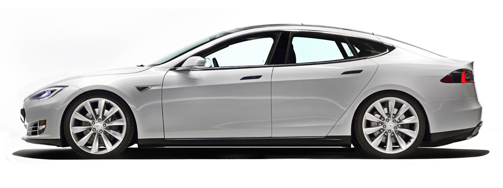
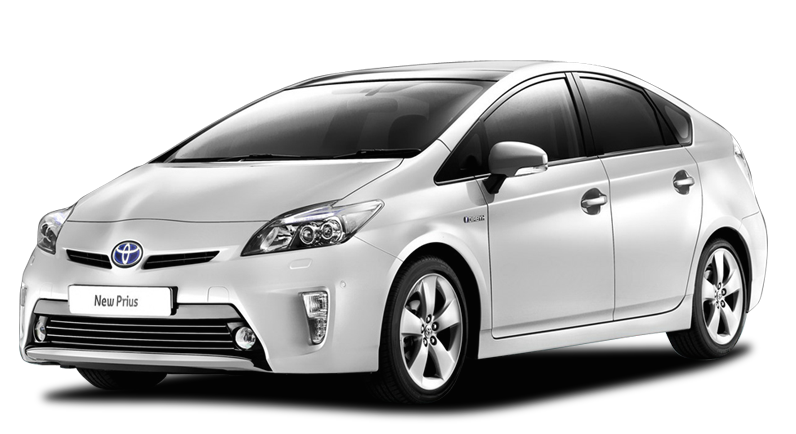
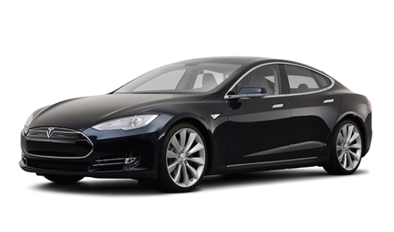

There are 3 viable ways to power automobiles.
Gasoline
Hybrid
Electric
As a society, we have developed a greater awareness of our environment than ever before. This is a great thing, and it is very much needed. When you consider the environmental impact that automobiles have had on our planet, efficiency has become more important than ever. At the moment, gasoline powered engines still dominate the automotive landscape. However, there are some very interesting technologies that have emerged over the last decade that will likely gain a considerable market share. These technologies involve alternate power sources, as well as increasing the efficiency of existing gasoline engines. The 3 most viable options are Gasoline, Hybrid, and Electic powerplants. In this discussion, we will consider diesel as a category of gasoline engines.
There are many challenges associated with making vehicles more efficient and cleaner than ever before. Its not just about the core technology. Things like affordability, convenience, and performance all matter as well. For example, there are existing systems that can yield over 100 miles per gallon, such as the Volkswagen XL1. But these existing systems cost hundreds of thousands, and their performance is very modest. The challenge is striking the right balance between price, convenience, and performance.
Internal combustion engines were the first mainstream power source for automobiles. They offered power, performance, and convenience at an affordable price. Since the invention of the internal combustion engine, there were no other viable options for nearly 100 years. The main drawbacks of gasoline engines are the operating costs and pollutants that are emitted from the exhaust of these powerplants. Gasoline is more expenive than ever, with many Americans paying between $4-$5 per gallon. This means that the consumer can expect to spend between $250-$350 per month for gasoline on average, every month. Gasoline engines also are the main culprit for a multitude of pollution problems globally. Emissions are a serious problem.
Over the last decade, some very considerable strides have been made with respect to gasoline engines. Automotive companies are using more precise fuel injection and mapping, in conjunction with forced induction to increase power and efficiency. For example, 10 years ago an engine that could produce approximately 250 horsepower would probably average around 18-20 mpg combined. Today, a small turbocharged engine can produce the same power and average nearly 30 mpg combined. That equates to an efficiency gain of nearly 40%. That is a very impressive feat, especially considering that no performance was sacrificed during the process.
The idea of 100% electric powered cars has been tossed around for a long time. The main limiting factors were always convenience and range. Until recently, the battery technology has lagged far behind the needs of consumers, requiring too many pit stops for charging. With recent advancements in battery technology, electic cars have recently becomre a viable alternative to gasoline engines. Vehicles such as the Tesla Model S have proven that electic cars can now satisfy consumer demands with respect to price, performance, and convenience. The Model S can travel upwards of 100 miles before needing to be recharged. For most commuters, that kind of range is more than adequate. The car can easily be charged at home using a standard power outlet.
Some advantages of electric power include higher relative performance compared to gasoline engines, and lower operating costs. Unfortunately, not everyone owns a home where they can just plug the car into an outlet. There are charging stations in the works that can charge the battery in about an hour, but they are not widespread enough at the moment to be considered a realistic option for all drivers. Battery swapping is another option, but its expensive and again, the infrastructure isn't developed enough. Electic power will continue to grow and become more effective, but its going to take some time.
Hybrid propulsion was the first large scale alternative the the conventional gasoline engine. Hybrid engines essentially utilize the best of both worlds, incorporating electric motors in conjunction with high efficiency gasoline engines. The net result is unmatched convenience, with competitive performance, and mainstream affordability. For this reason, hybrid engines have not only proven themselves over the last decade, their market share is growing faster than ever before. Perhaps the most iconic hybrid vehicle is the Toyota Prius. At the moment, the Prius can attain a up to 50 mpg combined, which is a huge achievement. In doing so, it barely makes any sacrifices in performance, and none in convenience.
Hybrids are likely to become the most realistic replacement for conventional gasoline engines. They are already immensely popular, and nearly every automaker offers a few hybrids in their lineup. Interestingly, the perception of hybrid automobiles is geared towards efficiency over performance, but this couldnt be further from the truth. The highest peforming cars in the world right now all use hybrid powertrains. For example, the 950+ horsepower Ferrari LaFerrari is a hybrid. So are the Porsche 918 and McLaren P1, both of which have around 900 horsepower. Even Formula 1 racing has adopted hybrid engines. These high performance cars may not be adopting hybrid engines for the same reason that everyday consumers are, but nonetheless, its speaks volumes about the versatility of the technology.